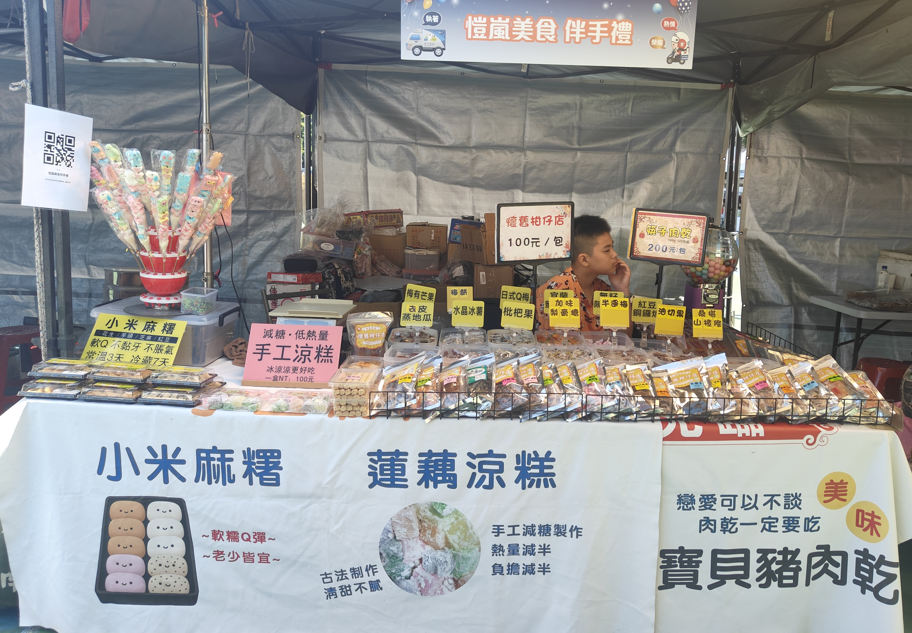
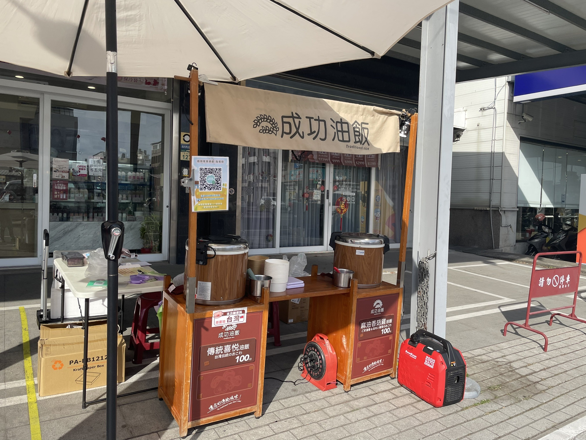
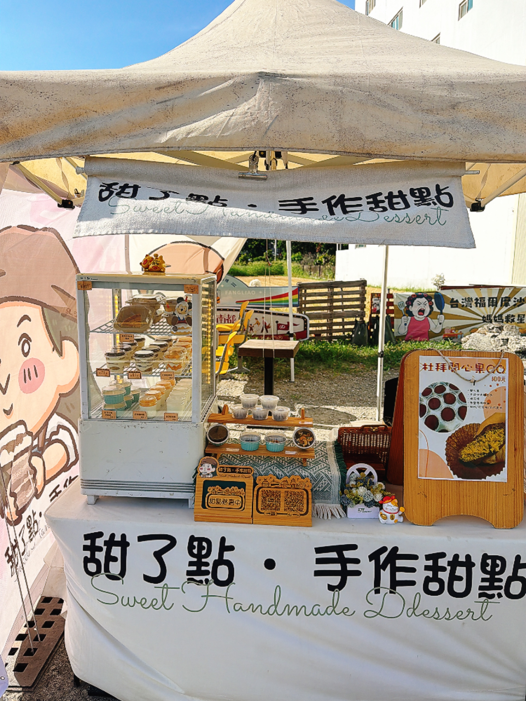
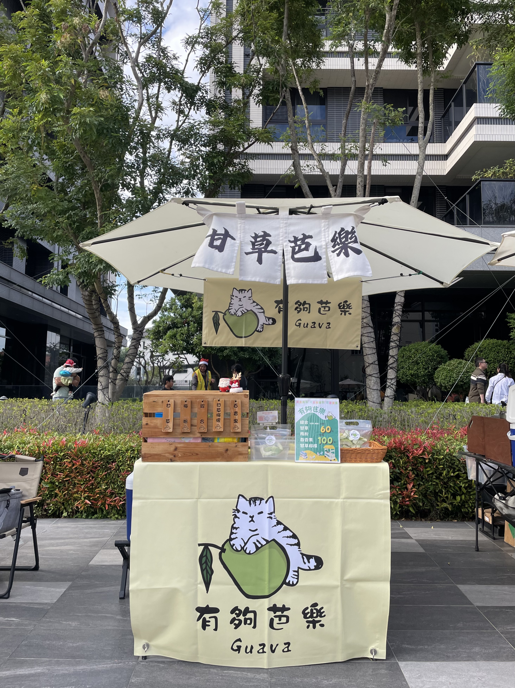
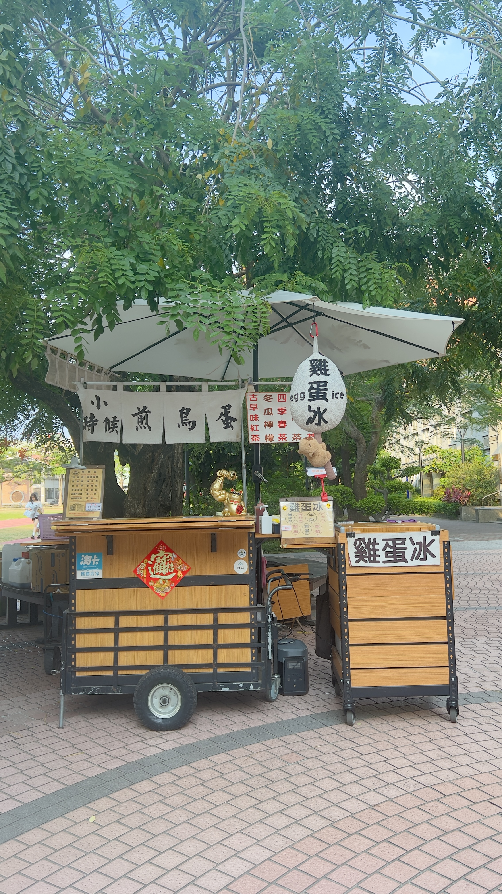
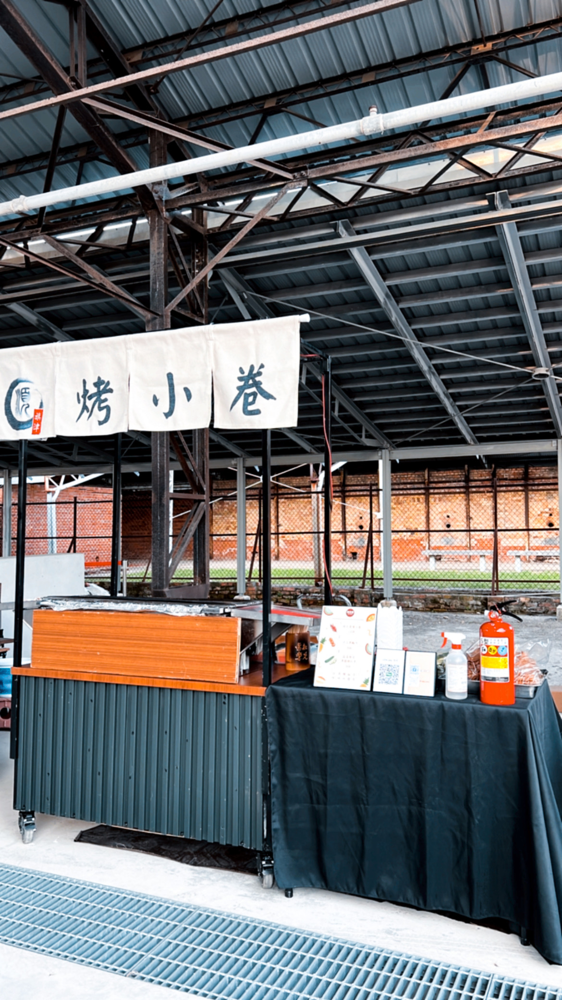
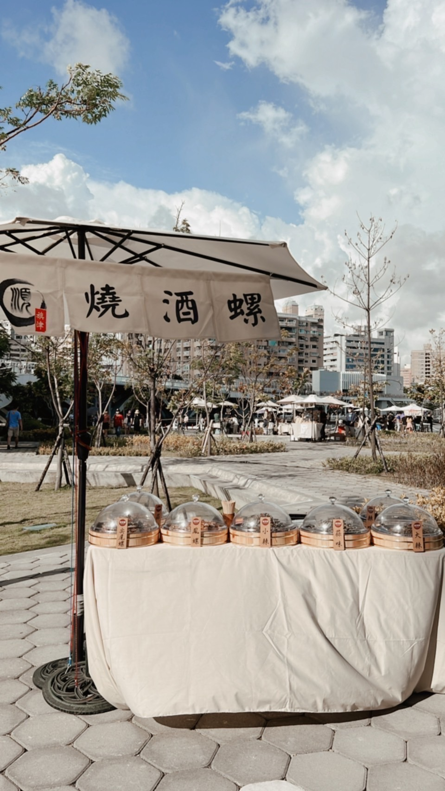
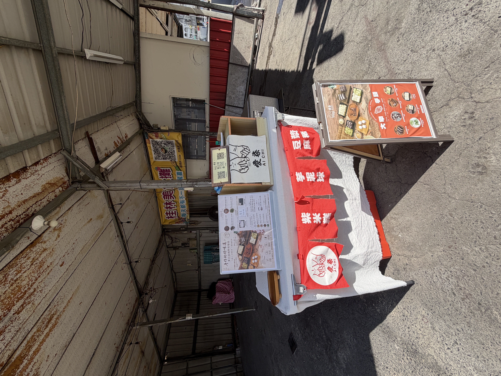
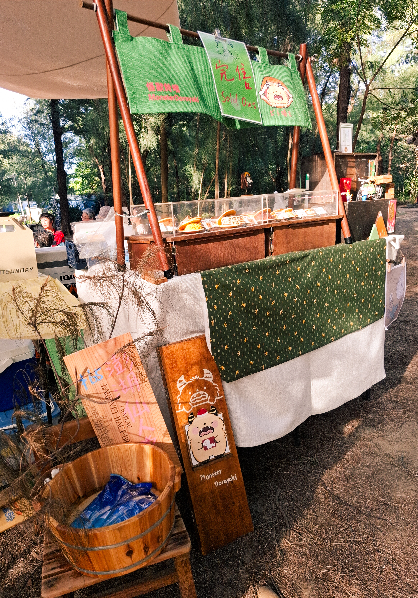

品牌介紹：手工涼糕遵循古早做法，口感軟嫩清爽不膩；肉乾以傳統手工製作，搭配真空技術鎖住鮮香，越嚼越有層次；小米麻糬Q彈細緻、內餡香甜，入口柔軟不黏牙，呈現最純粹的好味道。
主要販售品項：筷子肉乾 / 手工涼糕 / 小米麻糬 / 棉花糖
查看產品圖片

品牌介紹：
油飯，是台灣一種傳統的米食料理，通常是以蒸熟的糯米，拌入炒香的佐料。
台灣人的習俗，家中若有嬰兒出生，會以麻油雞及油飯祭祖並分送親友。 油飯是米糕的別名。
「成功油飯」，承襲阿嬤的手藝，阿嬤是辦桌師，在傳統的宴席上，台灣菜系，油飯佔著重要的角色，油飯不僅有飽足感，還很方便，不僅熱熱的吃，還是冷冷的吃，都有它不同的風味。
「成功油飯」，由孫女跟孫婿，重新調整做法，讓油飯不那麽油，黃金比例的做法，也不失傳統的味道，目前不僅僅有傳統的「喜悅油飯」，也有年輕人最愛的「麻油香菇雞油飯」，養生茹素的「麻油珍菇油飯」，最近即將推出夏日口味「金沙香菇雞油飯」「塔香香菇雞油飯」，成功油飯延續阿嬤的好味道，發揚台灣菜系，讓傳統滋味，繼續飄香。
主要販售品項：油飯
查看產品圖片

品牌介紹：
甜了點·手工甜點，每一款甜品都是療癒的詮釋。
我們的目標很簡單：讓每一個品嚐我們甜點的人，都能感受到那份源自內心的甜美與溫暖。
每一個蛋糕、每一款甜點，都凝聚了我們對美食的熱愛和對細節的無比堅持，只為呈現最純粹、最美好的甜蜜時光。
吃甜點可以治癒心情！
而美味的甜點可以療癒心情。
吃了甜了點～一切都覺得甜了點！
甜了點甜點⋯一點都不會很甜。
《所有甜點都是甜闆手工製作》
主要販售品項：蛋糕甜點
查看產品圖片

品牌介紹：
甘草芭樂不只是街頭小吃，它代表的是一種「台式輕食尚」。
我們嚴選高雄燕巢在地珍珠芭樂，果肉厚實、脆度最佳，支持在地農友。
搭配純中藥甘草研磨和手作梅粉以及新鮮檸檬原汁與百香果原汁調味，提供健康美味的小點心。
生活偶爾有澀味，但只要來到這裡，我們想給你一個「回甘」的理由。
有事沒事來吃水果
有夠芭樂就夠健康
主要販售品項：甘草芭樂 / 其它水果
查看產品圖片

品牌介紹：
兩個世代的回憶，交織出「小時候」這個溫暖的名字。
我們不追求浮誇的裝飾，
只想用最純真的味道，
喚醒你心中那段單純美好的時光。
來吧～
一起回到「小時候」，
找回那份屬於你的童年回憶。
主要販售品項：雞蛋冰 / 煎鳥蛋 / 瓶裝復刻飲品
查看產品圖片

品牌介紹：在地高雄深耕經營十餘年，現由第二代承接家業，延續傳統美食——烤小卷的獨特風味，讓這份經典滋味持續傳承。從昔日的港灣攤販，到如今扎根於市區，我們始終堅持手工製作與匠心烹調，只為將最純粹的美味帶給每一位饕客。希望透過我們的用心，讓更多人品味到這份來自大海的鮮甜與溫度，感受高雄在地美食的獨特魅力。
主要販售品項：燒烤海鮮 / 黑輪片
查看產品圖片

品牌介紹：
在地深耕高雄十餘年，我們始終堅持傳統美味的初衷，隨著後疫情時代的到來，我們勇敢轉型，賦予老味道全新的生命。將過去被視為庶民小吃的燒酒螺與無骨雞腳凍，透過嚴選食材、精緻擺盤與創新口味重新詮釋，讓人耳目一新——原來這些經典小吃，也能展現不凡質感與層次。
同時，我們精心研發多款特色下酒菜，融合傳統與創意，搭配各式飲品更是絕配，讓每一位饕客在每一口之中，不僅能品嚐到熟悉的記憶，也能感受到我們對料理的用心。這不只是味蕾的饗宴，更是一段關於傳承與創新的故事，讓人一試成主顧、回味無窮。
主要販售品項：燒酒螺 / 無骨雞腳凍
查看產品圖片

品牌介紹：創立於 2021 年，「愛柒」的誕生源自於一份對台灣土地的深厚情感。我們相信，最好的味道不必遠求。因此，我們致力於研發屬於「台灣味」的特色點心，堅持選用在地食材，透過手工製作與創新創意的結合，讓傳統點心作出令人驚豔的新滋味。
主要販售品項：紫米糕 / 麻糬 / 芋泥球
查看產品圖片
